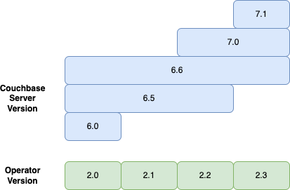
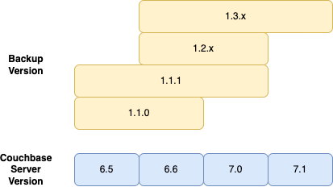
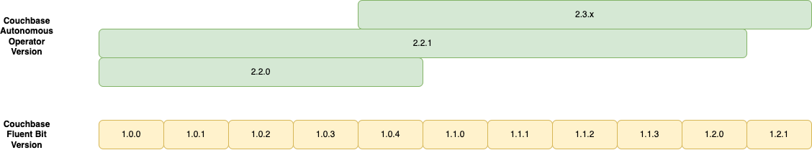
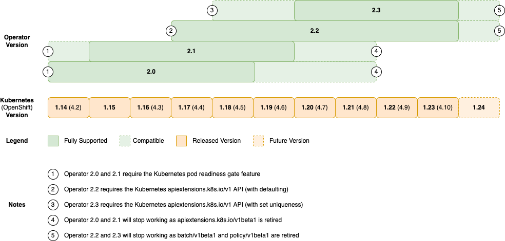

Prerequisites and System Requirements
The Autonomous Operator supports several popular Kubernetes environments and cloud-native utilities.
To install the Couchbase Autonomous Operator, all you need is a Kubernetes or OpenShift cluster running one of the compatible versions listed below.
| For all supported software versions listed on this page, maintenance/patch releases (x.x.X) inherit the same support level, unless noted otherwise. |
Couchbase Compatibility
Couchbase compatibility falls under these 3 categories:
-
Unsupported: This combination is not tested and is not within the scope of technical support if you have purchased a support agreement.
-
Compatible: This combination has been tested previously and should be compatible. Our technical support organization does not recommend this combination. You may run the Operator Self-Certification Lifecycle tooling to verify the Operator will work on a compatible platform. We therefore highly encourage the use of a supported platform version.
-
Supported: This combination is subject to ongoing quality assurance and is fully supported by our technical support organization.
This release supports the deployment of the following Couchbase software:
| Software | Version |
|---|---|
Couchbase Server Enterprise Edition |
6.6, 7.0 |
The following diagram depicts Couchbase Server compatibility with the Operator for this, and previous releases, and can be used to calculate upgrade paths:

Couchbase Backup and Restore Compatibility
This release supports the following container images for managed backup and restore of Couchbase clusters:
| Container Image | Backup Utility | Backup From and Restore To |
|---|---|---|
Couchbase Server 6.6—7.0 |
The following diagram depicts Operator Backup image compatibility with all supported Couchbase Server versions, you should consider this when upgrading Couchbase Server:

Couchbase Fluent Bit Compatibility
This release supports the following versions of the Couchbase Fluent Bit image for log forwarding:
| Couchbase Operator Version | Supported Couchbase Fluent Bit Versions |
|---|---|
2.2.0 |
1.0.0 - 1.0.4 |
2.2.1 |
1.0.0 - 1.0.4, 1.1.0 - 1.1.3, 1.2.0 |
2.3.0 |
1.0.4, 1.1.0 - 1.1.3, 1.2.0 |

Kubernetes Compatibility
This release supports the following Kubernetes platforms:
| Platform | Version |
|---|---|
Open Source Kubernetes |
1.20, 1.21, 1.22 |
Red Hat OpenShift Container Platform |
4.7, 4.8, 4.9 |
The following diagrams depict Couchbase Operator compatibility with Kubernetes and OpenShift platforms, and can be used to calculate upgrade paths:

|
Where an Operator release is marked as supported, this means it has been fully tested for functionality on that platform version. Couchbase Support will actively recreate and diagnose issues. Where relevant, fixes will be made to the affected product and patch releases made. Where an Operator release is marked as compatible however, this means it has been assessed by the development team to be technically feasible, and may have had rudimentary compatibility testing. You may run the Operator Self-Certification Lifecycle tooling to verify the Operator will work on a compatible platform. Support will be provided on a best-effort basis, and any issues may not result in fixes and patch releases. We therefore highly encourage the use of a supported platform version. |
Managed Kubernetes Compatibility
This release supports the following managed Kubernetes services and utilities:
-
Amazon EKS
-
Google GKE
-
Microsoft AKS
-
Rancher
|
With Operator 2.2.0, we added support for Bottlerocket OS. Bottlerocket is a Linux-based open-source operating system that is purpose-built by Amazon Web Services for running containers. To create an EKS cluster with Bottlerocket OS, follow the steps here. |
Persistent Volume Compatibility
Persistent volumes are mandatory for production deployments. Review the Autonomous Operator best practices for more information about cluster supportability requirements.
This release supports the following persistent volume provisioners:
CPU and Memory Requirements
It is highly recommended that your Couchbase clusters are deployed with some form of memory resource request in order to ensure fair scheduling of workloads and to ensure resources are available to meet basic service levels.
You can set all resource allocations yourself explicitly, however for new users to the platform we recommend using auto resource allocation. Using this feature will require:
-
2 CPUs per Couchbase pod by default.
-
512MiB of memory per pod for each of the Data, Index, Search, and Eventing Services that are enabled. 1GiB of memory per pod if the the Analytics Service is enabled. An additional 25% memory overhead on top of the memory requirements for each service. For a typical development cluster where all services are enabled, this would equal 3.75GiB.
You can read more about pod scheduling in the best practices documentation.
RBAC and Networking Requirements
Preparing the Kubernetes cluster to run the Operator may require setting up proper RBAC and network settings in your Kubernetes cluster. Before moving forward, review the following documentation:
Next Steps
As you’re setting up your Kubernetes environment, make sure that you’re following the recommended best practices.
Once your Kubernetes environment is set up, you can move on to installing the admission controller and the Operator.